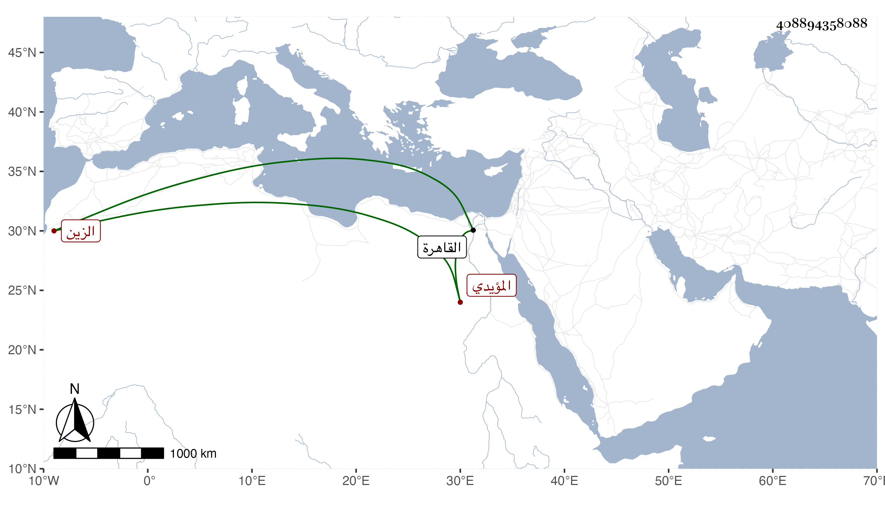

0902Sakhawi.DawLamic.ITO20230111-ara1.EIS1600.408894358088
Biography ID: 408894358088
564
فرج بن سكزباي بمهملة ثم كاف مكسورتين بعدها زاي ساكنة ثم موحدة الزين المؤيدي شيخ رباه في حال إمرته فلما تسلطن عمله خاصكيا ثم أمير عشرة وقربه لجماله حتى صار من أعيان دولته وكان طوالا خفيف اللحية مليح الشكالة جميلا ، مات في رابع صفر سنة أربع وعشرين بالقاهرة بعد مرض طويل . ذكره المقريزي والعيني وغيرهما .
